Campaign mode: the Belkara-Salergian war (first pass)
7 October 2026
Skyfront has a campaign mode, set on Beckett's Chira map. The first campaign is a six-mission war in which you fly for Belkara against its northern neighbour, the Republic of Salergia. Open it from Campaign in the top bar: the map shows a pin for each mission, and each mission unlocks when you win the one before. Results (won, best score, best time, attempts) are saved in the browser.
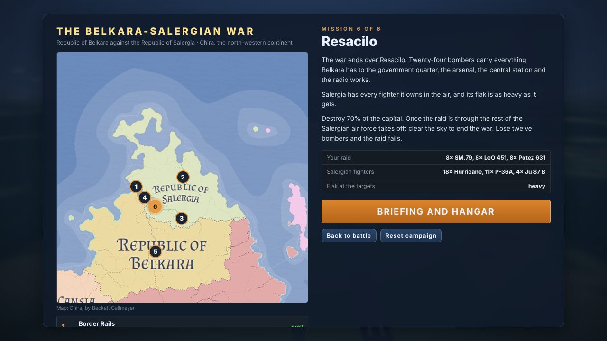
The campaign screen: Salergia and northern Belkara cut from the Chira map, with the briefing of mission 6.
The war
1. Border Rails: sixteen SM.79s against four rail yards, depots and barracks. No flak and a few Po-1s: Salergia has not mobilised.
2. Forest Airfields: twenty bombers on two forest airfields and the fuel dump beside them. The first P-36As scramble and the first light flak appears.
3. Mountain Pass: the pass fort, the dam and the ironworks in the border range, with more P-36As and a gun at every target.
4. Lake Industry: the Hurricanes arrive, and the aircraft works, foundry and rail terminal on the lake are heavily defended.
5. Counterstrike: Salergia now has Ju 87s. This time you defend your own forward field against dive-bomber raids and their Hurricane escorts.
6. Resacilo: twenty-four bombers raid the capital under heavy flak. Once the raid is through, the rest of the Salergian air force takes off and you clear the sky to end the war.
Salergia flies export aircraft: Po-1 biplanes and P-36As early on, then Hurricanes and Ju 87s. Every mission is plain data (targets, bomber flights, which fighters are airborne and when others scramble, how much flak guards each target), so the ramp from an unprepared enemy to a prepared one is easy to retune.
How a mission plays
You start in the air with the raid. Fly one of the bombers in the lead flight (it carries the bomb sight, R for the gunners) or a fighter of the escort. The AI bomber flights fly to their own assigned target and drop tight sticks, and the escorts cover them.
The panel at the top shows how much of the target set is destroyed against the goal, the bombers lost against the limit, and each target. Win by reaching the goal; lose if too many bombers go down, the bombs run out or time runs out.
You can pick any Belkaran aircraft in the hangar for a mission, whatever your career score.
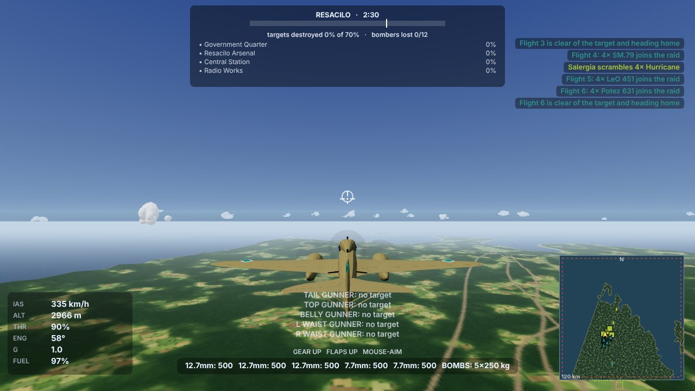
On the way to Resacilo: the campaign map is wooded lowland with a western range, a highland spine through Salergia and a border range.
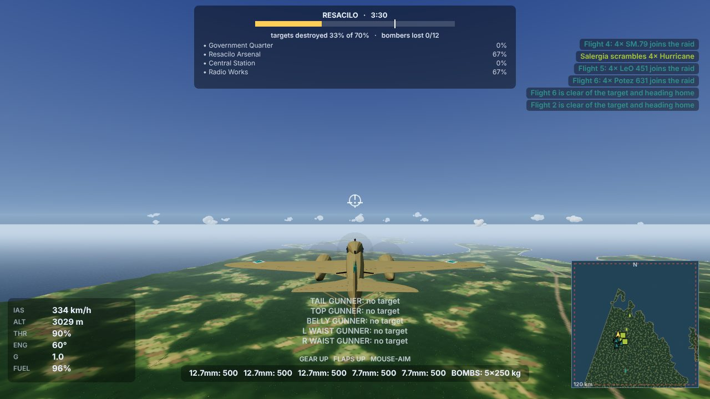
Mission 6 mid-raid: two of the four targets are burning and Salergia is scrambling Hurricanes.
The map
The terrain is traced from your Chira map and compressed to 250 m per map pixel, so it is a 120 km square (the map's own scale bar would make Salergia several times bigger). Salergia's capital Resacilo sits on its lake just north of the Belkaran border, as on the map.
What is rough
There is no Po-1 in the game, so Po-2s stand in for it. A Po-1 drawing would let me build the real thing.
Only mission 1 was flown in the browser as a whole raid. All six were run in a headless simulation, and the goals and loss limits were set from those runs, so later missions may need retuning after a real playthrough.
After they drop their bombs, the AI bombers leave the map a few seconds later instead of flying home.
Salergian targets use the standard base layout, so rail yards and dams are still ordinary clusters of buildings.
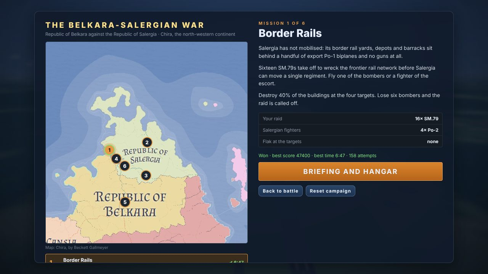
After a win the mission shows its best score and time, and the next one opens.
The Sotov Union's WWII air force: nine Soviet aircraft
7 October 2026
The Sotov Union now flies its own WWII-era aircraft: five fighters, the Il-2 Shturmovik, two twin-engined bombers and the Po-2 night bomber. Eight were built from the three-view drawings Beckett sent and checked against them line by line. The Po-2 came as a photo only, so it was built from its published dimensions. The Yak-9U has been rebuilt from its drawing too.
Po-2 (early prop): a wood-and-fabric trainer biplane with an open radial engine, two open cockpits, fixed gear and no flaps. It carries four 50 kg or two 100 kg bombs, and the navigator has a ShKAS facing aft on R. It is painfully slow but turns on a wingtip.
I-16 Type 24 (early prop): Polikarpov's stubby "Ishak", with a big radial, four ShKAS machine guns and RS-82 rockets. Quick to roll, twitchy in pitch.
LaGG-3: the all-wood Lavochkin, with a 20 mm ShVAK through the spinner, a 12.7 mm UBS and a ShKAS. Tough but heavy.
Il-2 Shturmovik: the armoured two-seater, with two 23 mm VYa-23 cannon, two ShKAS, eight RS-82 rockets, up to 600 kg of bombs, and a rear gunner on R.
Pe-2: the fast "Peshka" dive bomber, with a glazed nose, twin oval fins, six 100 kg bombs, and 12.7 mm UBT gunners in the canopy and the ventral hatch.
La-5: the LaGG airframe with a big radial and two synchronised ShVAKs, in the early high-backed form.
Tu-2S (late prop): a fast medium bomber with up to 1,500 kg in the bay, two ShVAKs in the wing roots and three gunner positions.
Yak-9U: rebuilt from its drawing, with the oil coolers in the wing roots and the radiator under the belly.
La-7: Lavochkin's best fighter, with the intakes moved to the wing roots, two ShVAKs and 661 km/h.
The Sotov Union keeps its jets and helicopters for the later eras. The Pe-2 and Tu-2 are flown with a control wheel.
The models
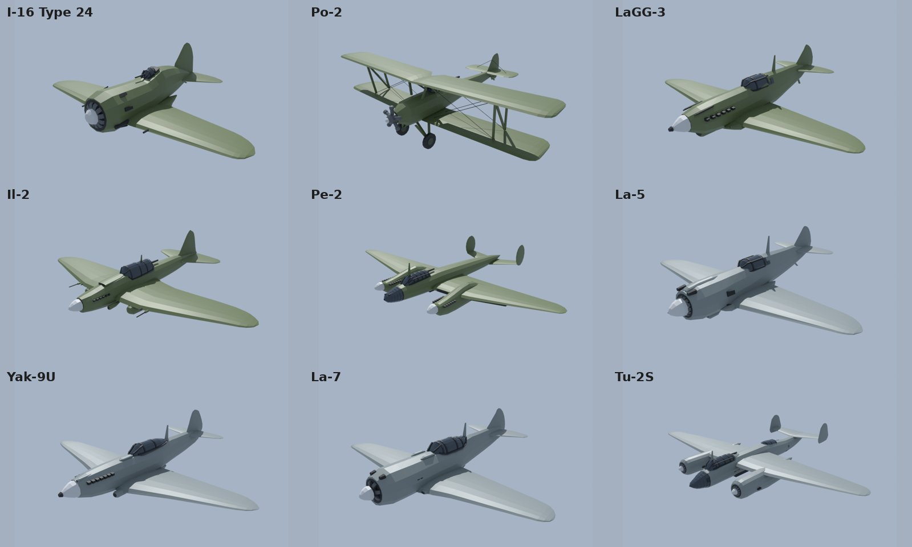
The nine airframes as built in Blender.
Checked against the drawings
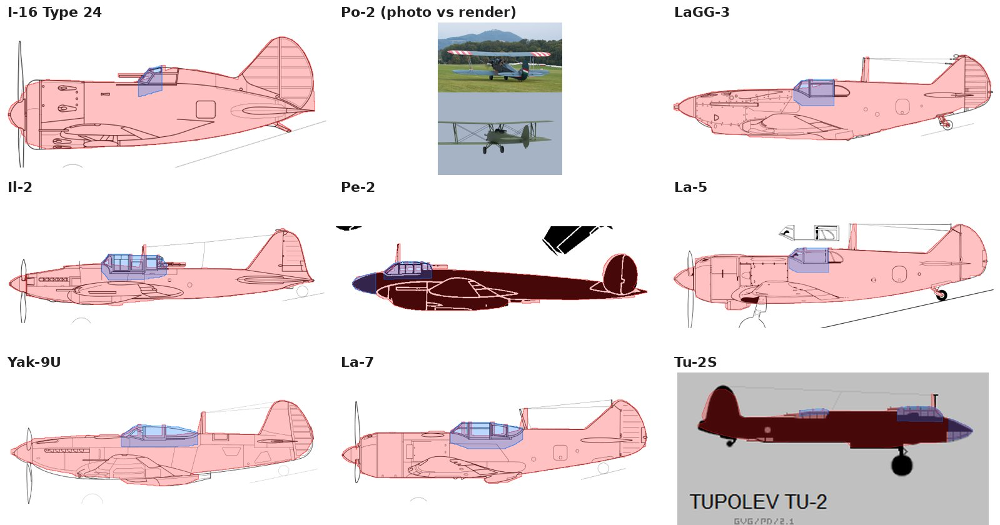
Each model's outline (red, glass in blue) laid over the side view it was built from; the tops and fronts were checked the same way. The Po-2 had only a photo, so a render from a similar angle sits under it.
In the hangar
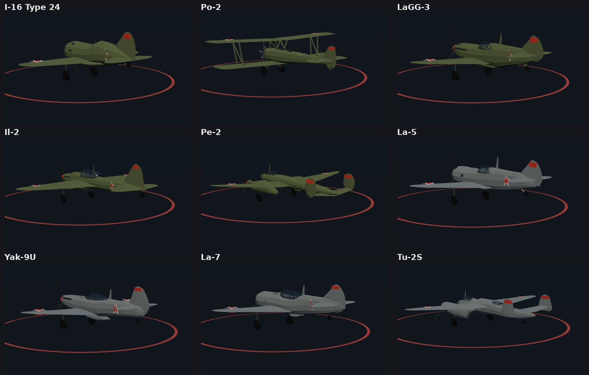
With props, landing gear and the Sotov star.
Cockpits
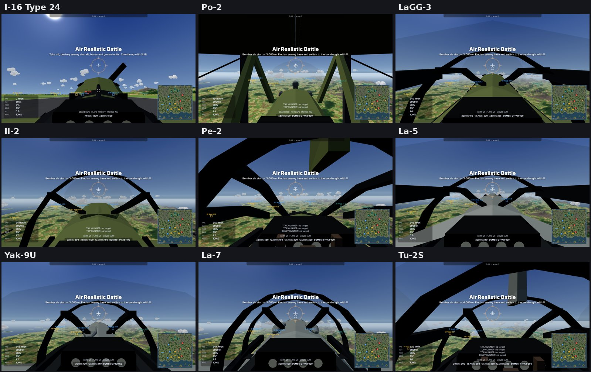
From the Po-2's open cockpit under the upper wing to the long framed glasshouse of the Tu-2.
Belkara joins the war: a fourth nation and nine new aircraft
7 October 2026
The Republic of Belkara is no longer a locked teaser. It is a playable fourth nation with teal colours and a diamond marking, its own airfield, bases and ground forces, and a WWII air force of Italian and French types. All nine were built from three-view drawings, the SM.79 and Potez 631 from a second set Beckett sent after the first build.
CR.42 Falco (early prop): the last fighter biplane, with an open cockpit, spatted fixed gear and no flaps. It turns inside everything and can carry two 100 kg bombs.
MC.200 Saetta: the radial Macchi with two 12.7 mm Breda-SAFATs, strong and a superb turner.
MS.406: a 20 mm HS.404 through the spinner and a MAC 1934 in each wing, with the radiator lowered under the belly.
D.520: the long-nosed Dewoitine with the moteur-canon and four wing guns.
Re.2001 Falco II: the DB 601 in Reggiane's big semi-elliptical wing, with two 12.7s and two 7.7s.
C.202 Folgore: the fastest of them at 600 km/h, light on the controls and still only two 12.7s.
Potez 631: a twin-engined heavy fighter with two 20 mm cannon under the fuselage and a rear gunner on R.
LeO 451: a fast medium bomber with a glazed nose, twin fins, six 200 kg bombs, and dorsal and ventral gunners.
SM.79 Sparviero: the trimotor with the "gobbo" hump. It carries five 250 kg or twelve 100 kg bombs and has four gunner positions, with two pilots side by side.
On Skyfront Island, Belkara holds a valley cut through the northern mountains. On Trident Isles it has its own island on the north edge. Belkara has only props, so in a jets match its pilots still fly them. The CR.42 is the first aircraft with no flaps: the flap key does nothing, and the HUD says so.
The models
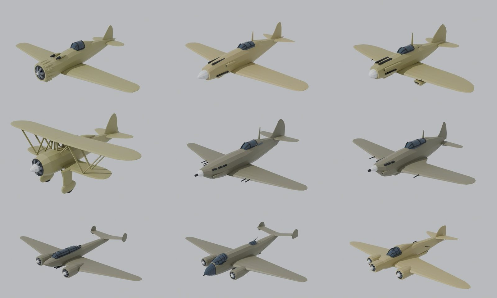
The nine airframes as built in Blender.
Checked against the drawings
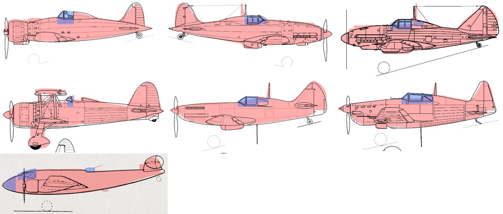
Each model's outline (red, glass in blue) laid over the side view it was built from. The tops were checked the same way.
In the hangar
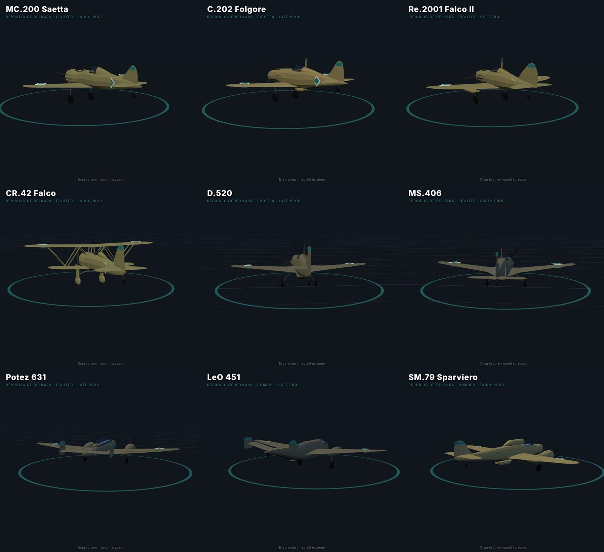
With props, landing gear and Belkara's diamond.
The valley airfield
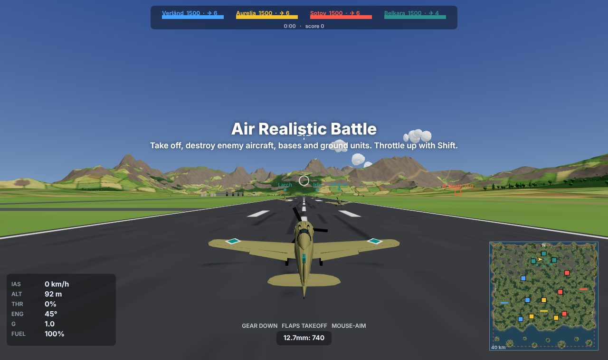
Four nations on the scoreboard, and Belkara's runway between the northern mountains.
Cockpits
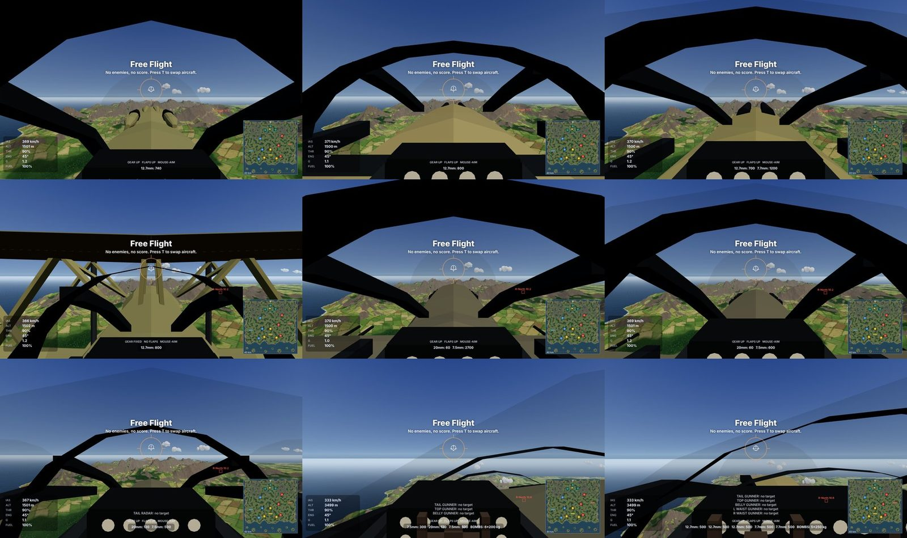
In the SM.79 you fly from the left seat beside the second pilot. The LeO 451 pilot sits offset to the left. Both bombers are flown with a control wheel.
Aurelia's WWII air force: eight new aircraft
7 October 2026
The Republic of Aurelia gets its WWII-era air force: four fighters, a dive bomber, a fighter-bomber and two bombers, each built from a three-view drawing, with its real top speed, armament and loadouts. The Bf 109 K-4 has been rebuilt from its drawing too.
Hurricane Mk I (early prop): eight .303 Brownings in a thick wing that turns tightly.
Spitfire LF Mk IX: the elliptical wing, two 20 mm Hispanos and four .303s, and a 500 lb bomb.
Bf 109 K-4: rebuilt with the Erla canopy and tall tail, a 30 mm cannon through the spinner and two 13 mm guns.
Fw 190 A-8: the BMW 801 radial, two 13 mm and four 20 mm guns, a 500 kg bomb or two WGr 21 rockets.
Ju 87 B-2 Stuka: the inverted gull wing, fixed spatted gear, dive brakes and a 500 kg bomb, with a rear gunner on the gunner key (R).
He 111 H-6: the fully glazed nose, eight 250 kg bombs, and nose, dorsal, gondola and beam guns on R.
Mosquito FB Mk VI: the wooden twin with four .303s and four 20 mm cannon, four 500 lb bombs or eight RP-3 rockets.
Lancaster B Mk I: four Merlins, fourteen 1000 lb bombs or a 4000 lb "Cookie", and nose, mid-upper and tail turrets.
The Ju 87 is the first aircraft with fixed landing gear: it is always down, its drag is part of the top speed, and it can't be torn off by overspeed.
The models
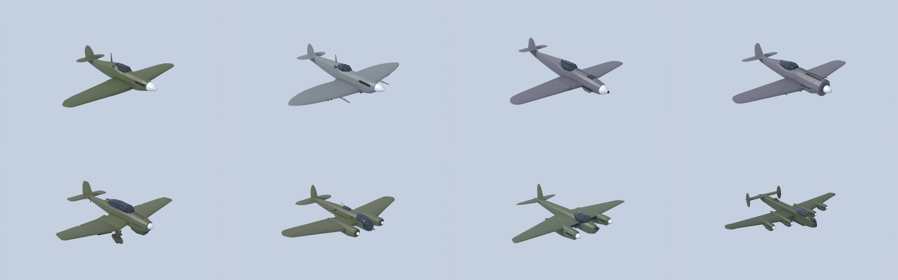
The eight airframes as built in Blender.
Checked against the drawings
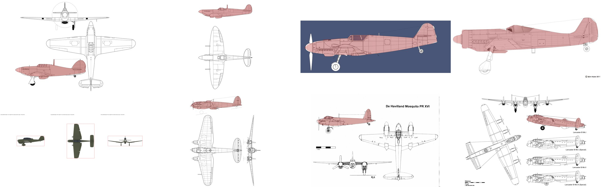
Each model's outline (red) laid over the drawing it was built from.
In the hangar
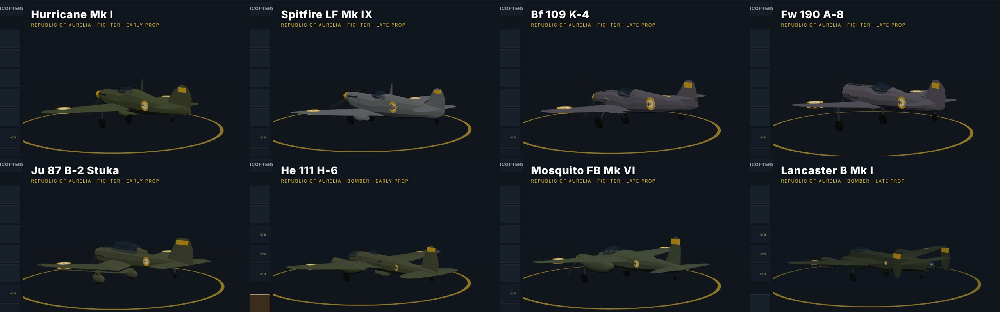
With props, landing gear and Aurelia markings.
Cockpits
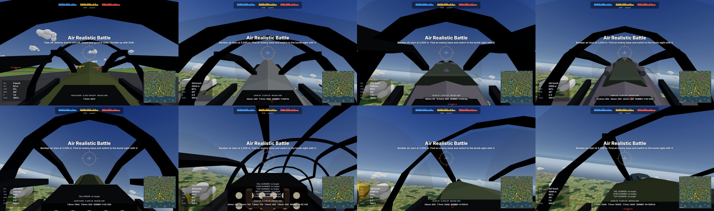
In the He 111, Mosquito and Lancaster you sit in the left seat. The He 111 and Lancaster are flown with a control wheel, the Mosquito with a stick.
Verländ's WWII air force: six new aircraft
7 October 2026
The Federation of Verländ gets the first of the new WWII-era types: four fighters and two bombers, each built from a three-view drawing and checked against period photographs, with its real top speed, armament and loadouts.
P-36A Hawk (early prop): a nimble turn fighter with a .30 and a .50 in the cowl.
F4F-4 Wildcat (carrier fighter): six .50s and two 100 lb bombs, launching from the carrier deck and catapult.
P-47D Thunderbolt "razorback": eight .50s, three 500 lb bombs or six HVAR rockets.
P-38J Lightning: twin booms with counter-rotating props, four .50s and a 20 mm cannon in the nose, bombs or ten HVARs.
B-25J Mitchell: glazed bombardier nose, forward package guns, a top turret, waist and tail guns on the gunner key (R), and a bomb bay whose doors open for the drop.
B-17G Flying Fortress: four engines, twelve 500 lb bombs, and the chin, top, ball, waist and tail guns all manned when you hold R.
Multi-engine aircraft now have a propeller per engine, and each engine adds its own thrust and torque. Gunners cover their own part of the sky: the B-17's chin turret engages targets ahead, the waist guns those abeam and the ball turret those below.
The models
The six airframes as built in Blender.
Checked against the drawings
Each model's outline (red) laid over the drawing it was built from.
In game
With props, landing gear and Verländ markings.
Cockpits
The P-38, B-25 and B-17 are flown with a control wheel. In the B-25 and B-17 you sit in the left seat beside the co-pilot, under a lined cockpit roof.
Every missile, rocket and SAM rebuilt
7 October 2026
Until now most of Skyfront's weapons were the same generic tube with four fins, just scaled up or down, and every ship-launched SAM looked like an SA-2. This update gives all 31 weapons their own model, built to the real weapon's dimensions with its real fin and wing layout, nose and seeker shape, and paint scheme. Each one was checked against period photographs.
Ship SAMs are now themselves: Tartar, Terrier, Sea Slug, Sea Cat, Volna and Shtorm each have their own shape.
Boosters drop away after launch on the SA-2, Terrier, Sea Slug, Volna, Harpoon, P-15 and P-35.
Folding fins sit flat on the pylon and spring out once the weapon is away: the S-5, R4M, FFAR and 2 in rockets, and the ventral fins on the Kh-22 and Rascal.
Each sheet shows the side, front, three-quarter and top views.
Air-to-air
R-98 (Su-15), AIM-4 Falcon (F-102A), Red Top and Firestreak (Lightning).
Air-to-surface
Kh-22 (Tu-22), Martel and Sea Eagle (Buccaneer), GAM-63 Rascal (B-47), SS.11 (H-34) and 9M17 Falanga (Mi-4).
Ship-launched anti-ship missiles
RGM-84 Harpoon, MM38 Exocet, P-15 Termit and P-35, shown with their boosters attached.
Surface-to-air
SA-2, Tartar, Terrier, Sea Slug with its four wrap-around boosters, Sea Cat, Volna and Shtorm.
Unguided rockets
WGr. 21, HVAR, RS-82, R4M, ARS-212, S-5, Mk 4 FFAR, RP-3 and the British 2 in rocket, as carried.
Fins out
In flight: the folding fins spring out and the Kh-22 and Rascal drop their ventral fins.